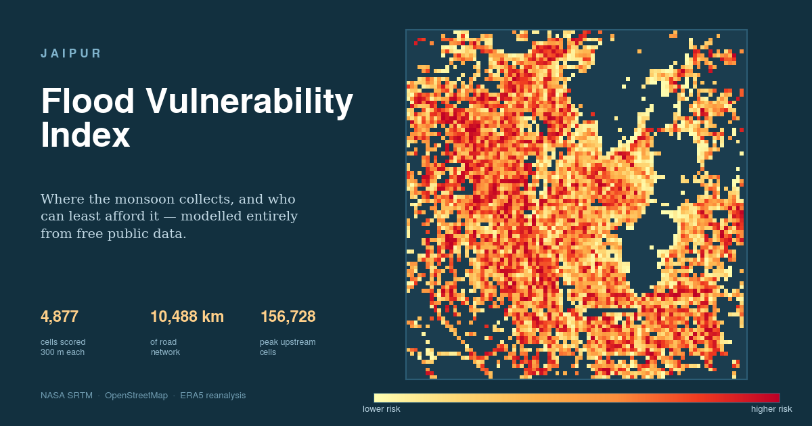

Jaipur waterlogs in roughly the same places every monsoon. This model asks whether that is predictable from freely available data — and which of those places can least afford it.
Status: built and running on live data. Not yet validated against observed flooding. No accuracy figure is claimed here. Field observations are being collected now; until then this is a screening tool, not a forecast.

Water is simple: it runs downhill and collects where the ground is low and flat. That much is computable from an elevation map. The model fills spurious pits in the terrain, routes flow downhill cell by cell, counts how much land drains through each point, and combines that into the Topographic Wetness Index.
Onto that it layers what is built there and how well it is served, then scores every 300-metre cell from 0 to 100 — relative to the rest of Jaipur.
Every urban cell, coloured 0–100. Click one for the figures behind its colour.
Where risk meets people. An exposure floor is applied, so these are built-up streets rather than empty ground.
Hydrology only — where water collects regardless of who lives there. Often open floodplain. Off by default.
Nalas, drains and channels as recorded in OpenStreetMap.
Those first two are deliberately separate. Where does water collect and where should a municipality act are different questions, and merging them produced a list of empty floodplain.
Every input is free and needs no account: NASA SRTM elevation via AWS terrain
tiles, OpenStreetMap through Overpass, and ERA5 rainfall from Open-Meteo. Run
python run_pipeline.py, or open the notebook in Google Colab.
The hydrology is checked by tests against landscapes with known answers — that filling a pit raises it to the surrounding level, that water in a valley collects on the valley floor, that flow accumulation never invents water.